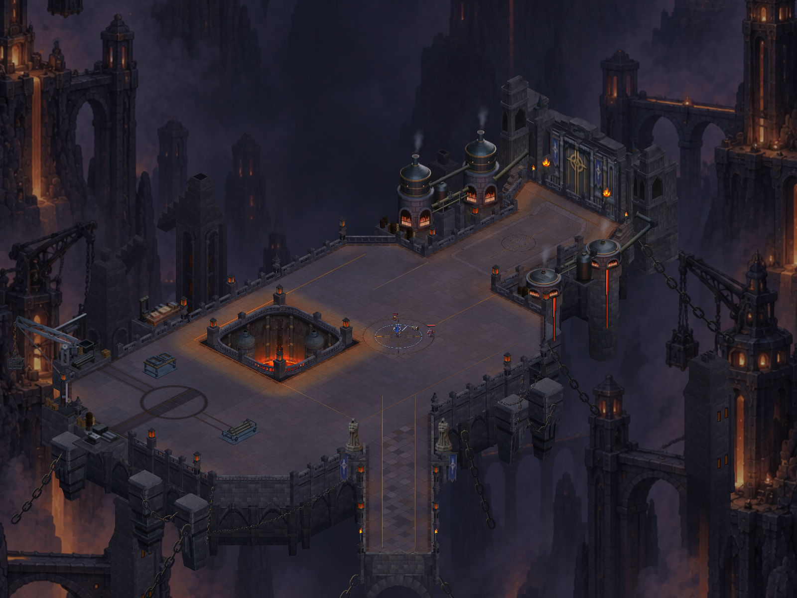
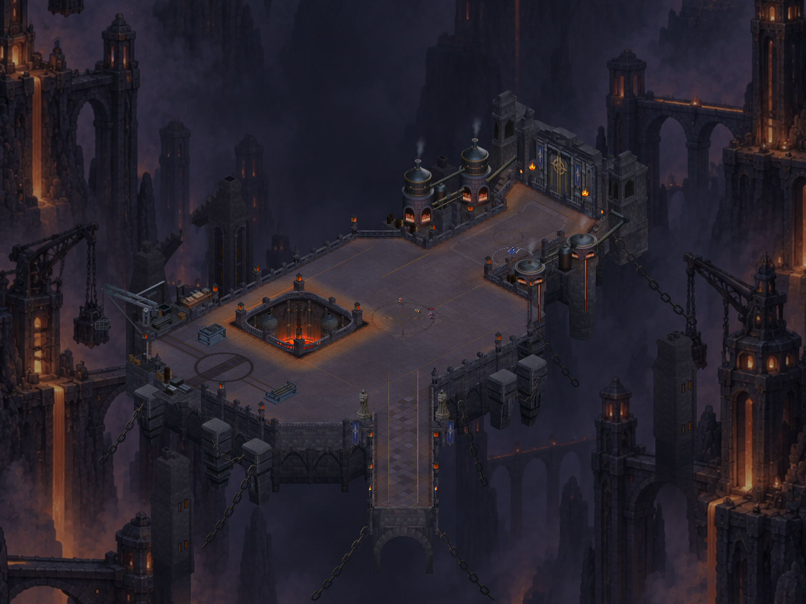
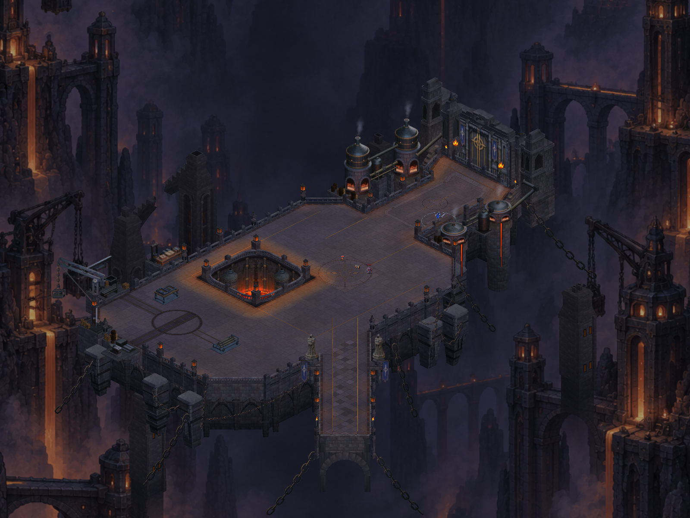
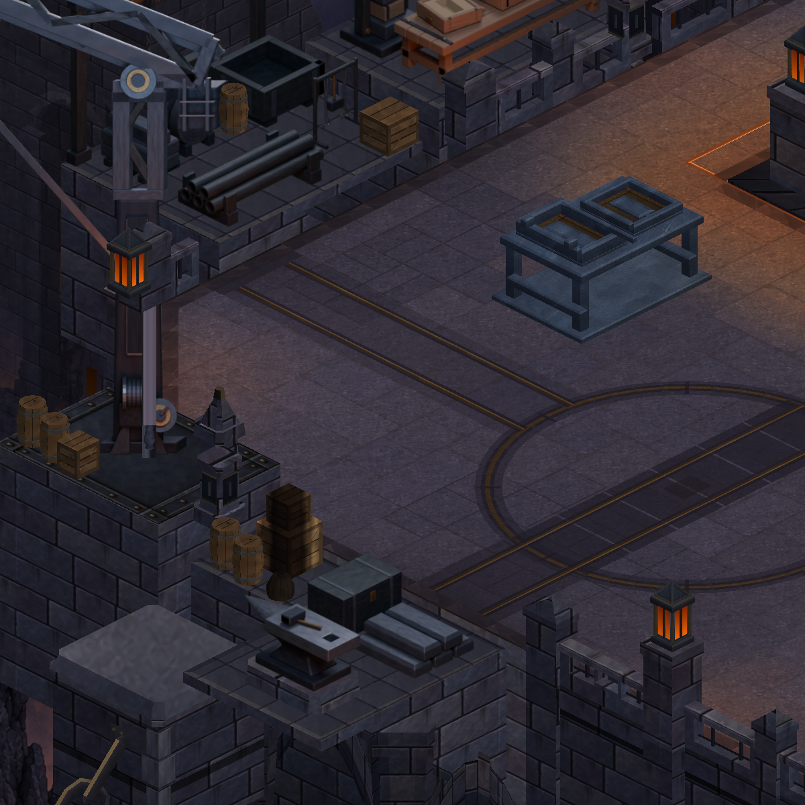
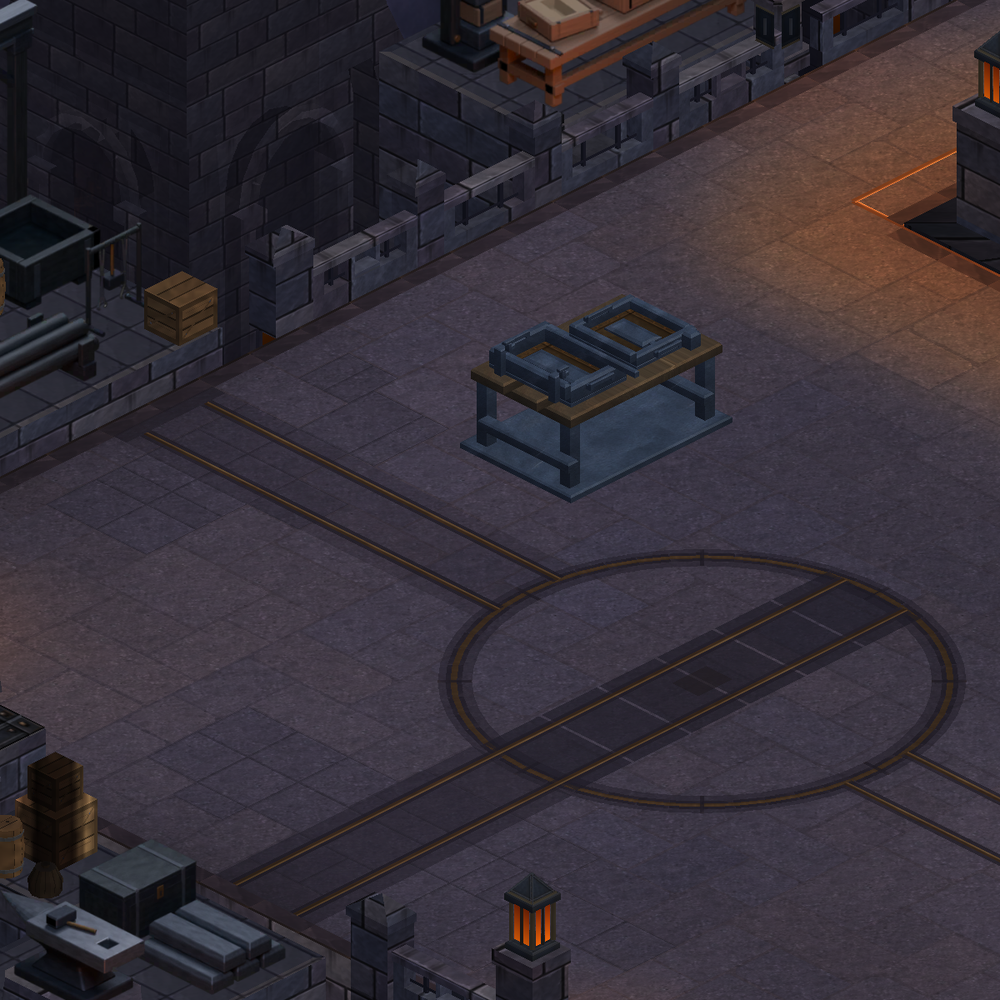
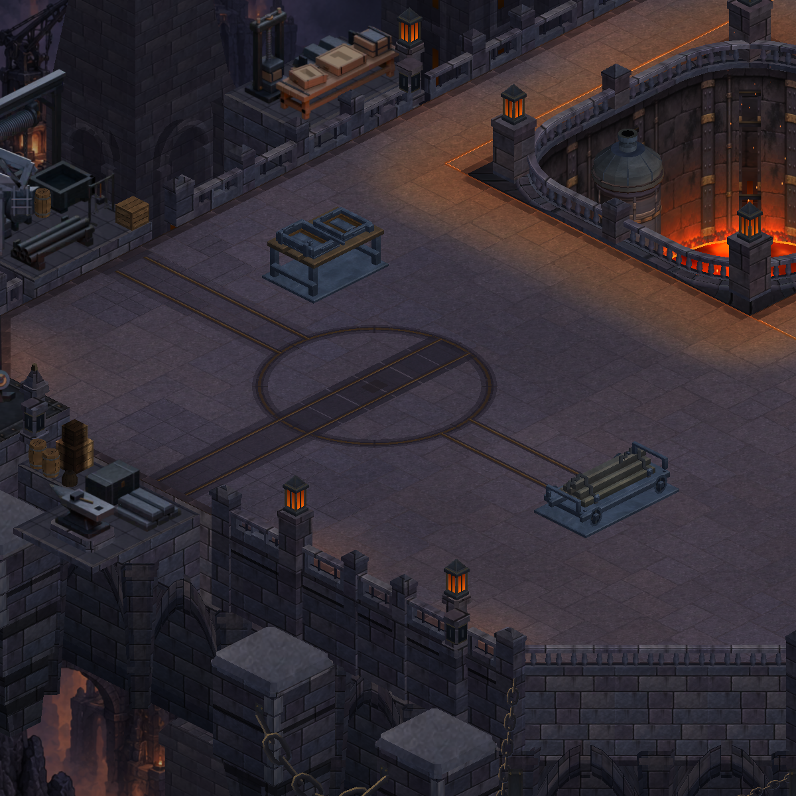
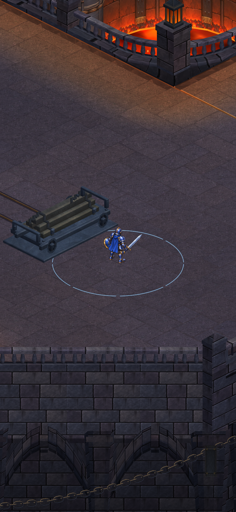
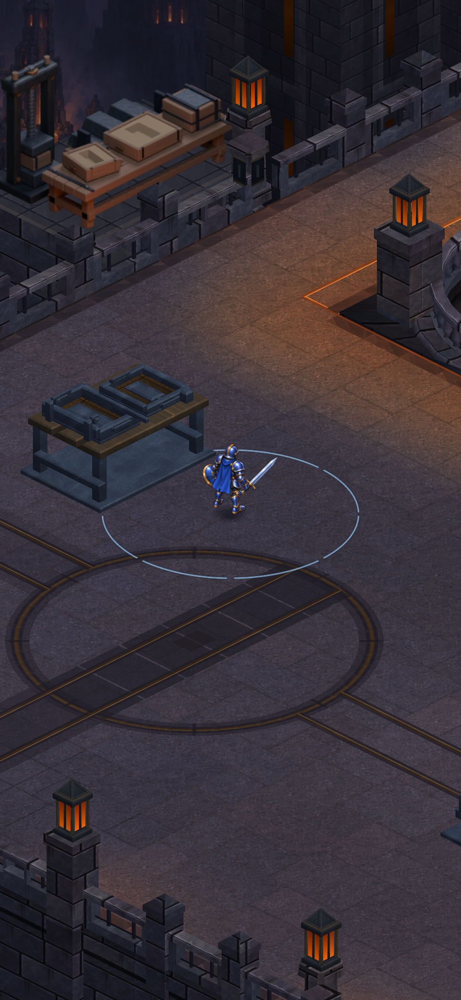
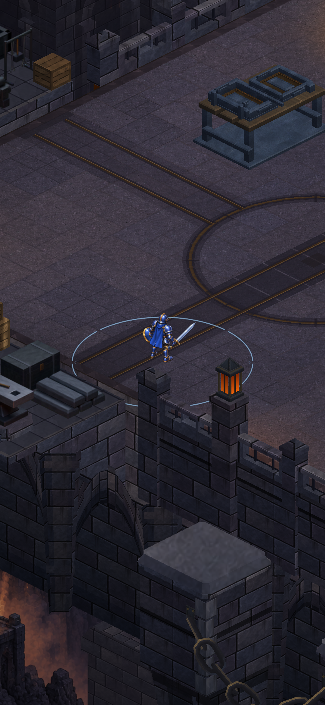
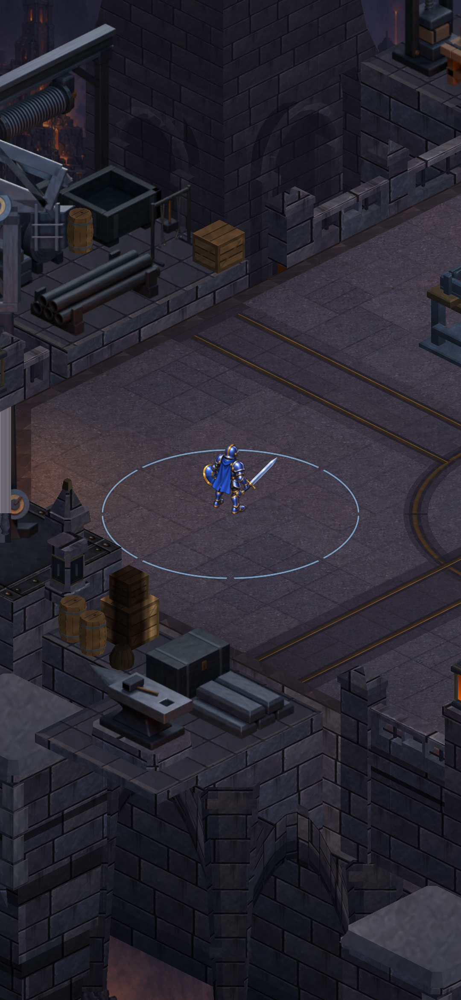

CRYPTFORGE · GERÇEK UNITY GÖRÜNTÜLERİ
Avlu genişliyor, çalışma düzeni tamamlanıyor
Ana avlu 44’ten 50 birime, çukurun batısındaki çalışma şeridi 14’ten 20 birime genişledi. Vinç ve stok alanı batıya taşındı; raylar, araba ve tezgâh yeni alana yerleşti. Ekipmanların bağlantıları ve yüzeyleri ayrıntılandırıldı. Önce/sonra görüntülerindeki kamera konumu ve ölçeği aynıdır.
Bunlar oyunun Unity görüntüleridir; telefon ekran görüntüsü değildir. Entegrasyon ve doğrulama durumu paket kaydında tutulur. Onaylı referansın bütün görsel ayrıntıları henüz tamamlanmış değildir.

Sonra · gerçek Unity görüntüsü, eşleşen kamera.
Harita ve çevresindeki yapılar

Önce · b5bcbed
Sonra · aynı kameraAvludaki çalışma düzeni

Önce
Sonra · aynı kameraYeni batı alanı — yalnızca yeni sürüm
Bu ek kameralar genişleyen alanı ve yeniden yerleştirilen ekipmanı inceler; karşılaştırma kameraları yukarıda sabittir.

Yeni sürüm · geniş çalışma avlusu · Unity

Bağlantıları tamamlanan yük arabası
Ahşap yüzey ve bağlı kalıp sıkıştırıcıları
Yeni yürünebilir batı şeridi
Kuzeybatı yaklaşımıDikey görüntüler oyun kamerasının genişliğini kullanır; karşılaştırma için kahraman yerleştirilmiş ve arayüz gizlenmiştir. Onaylı çizim hedefi gösterir, oyunun tamamlanmış hâlini göstermez. Referansı tam boy aç · Kapsam ve doğrulama